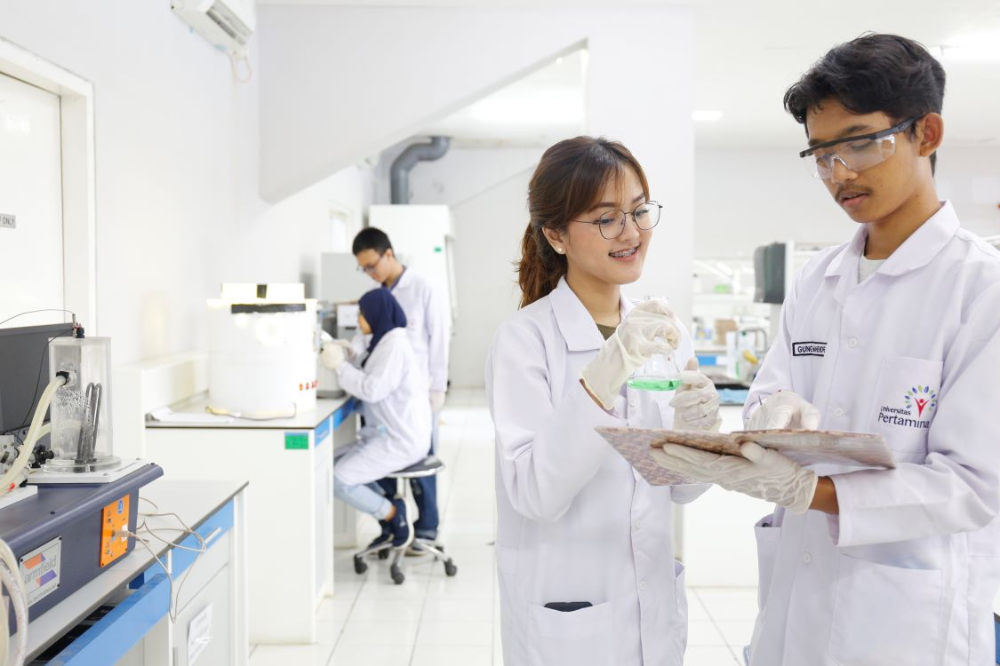

1.Beasiswa PrestasiBeasiswa prestasi diberikan kepada mahasiswa yang selama menempuh masa studi di level SMA/SMK atau sederajat memperoleh juara umum 1,2,dan3. Benefit yang didapatkan dari beasiswa prestasi adalah potongan uang kuliah (hanya sks) sebanyak 20 sks selama menempuh perkuliahan di UNKLAB. 2.Kartu Indonesia Pintar (KIP) KuliahProgram beasiswa dari Pemerintah melalui Kementrian Pendidikan, Kebudayaanm Riset, dan Teknologi untuk mahasiswa yang membutuhkan. Syarat dan ketentuan mengikuti aturan dari Kementrian Pendidikan, Kebudayaan, Riset, dan Teknologi. 3. Program Student LaborProgram student labor merupakan salah satu dari UNKLAB sejak awal UNKLAB berdiri hingga saat ini. Program student labor memberikan kesempatan kepada mahahsiswa anggota Greja Masehi Advent Hari Ketujuh untuk dapat membiayai perkuliahan dengan bekerja berbagai departemen yang ada di UNKLAB. |
 |
Copyright WebDesign Course UNKLAB © 2024